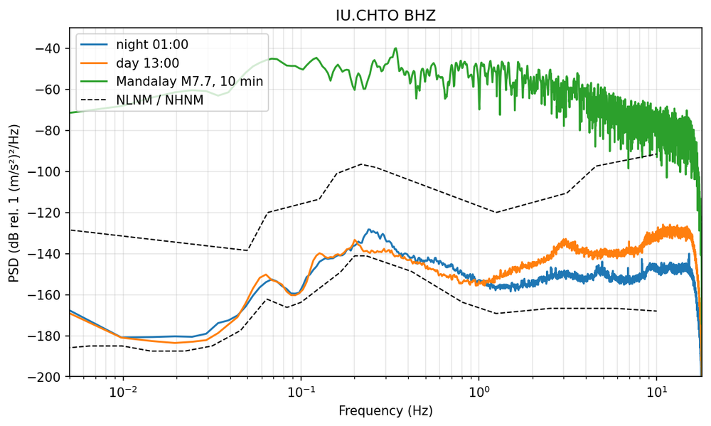
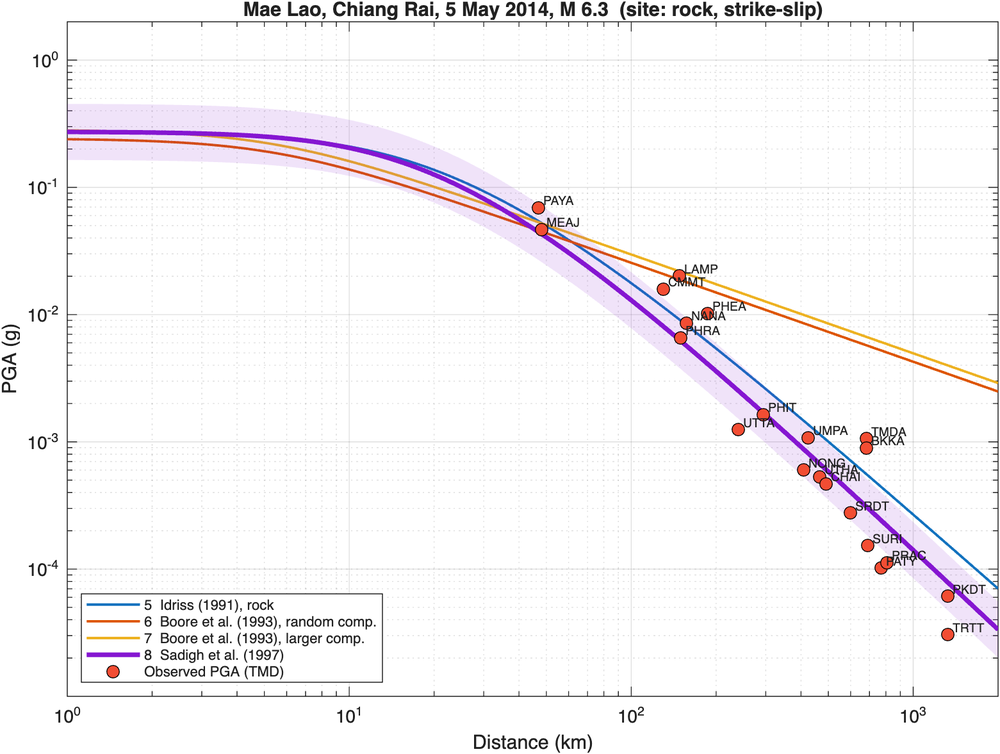
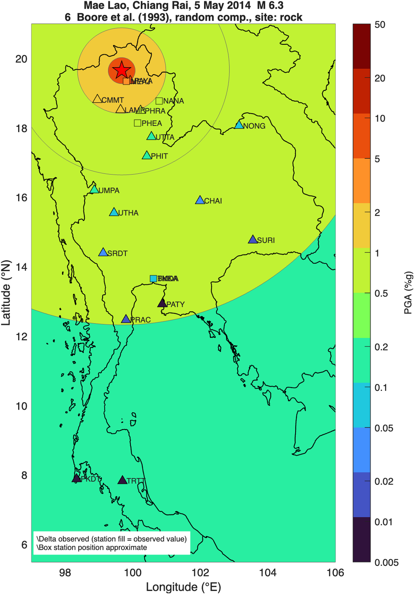

สัปดาห์ที่ 13 · SB2
ความถี่ของคลื่น และความรุนแรง
สัญญาณกับ noise ในหน่วย dB ความรุนแรง PGA และ GMPE ผลของชั้นดิน และมาตรา MMI 12 ระดับ จบบทด้วยแบบทดสอบ 2 ชุดและ Lab 4–5
2.1 สัญญาณ (signal) กับ noise
ตาม NMSOP-2 บทที่ 4 (Bormann & Wielandt, 2013) สัญญาณคือคลื่นชั่วคราวจากแหล่งกำเนิด เช่น แผ่นดินไหว ส่วน noise คือการเคลื่อนที่ของพื้นที่ไม่ตรงกับสิ่งที่เราศึกษา ซึ่งขึ้นกับจุดประสงค์ noise คาบสั้นในเมืองที่รบกวนงานแผ่นดินไหว กลับเป็นข้อมูลสำคัญในการทำ microzonation เพื่อหาความหนาชั้นดิน
สัญญาณใด ๆ แยกเป็นผลรวมของคลื่นไซน์หลายความถี่ได้ (Fourier transform) แล้วดูว่าพลังงานอยู่ที่ความถี่ไหน · สัญญาณชั่วคราวใช้ energy spectral density ส่วน noise ที่ต่อเนื่องใช้ power spectral density (PSD)
| ปรากฏการณ์ | ความถี่ | คาบ |
|---|---|---|
| Rayleigh wave ที่ใช้คำนวณ Ms | 0.05 Hz | 20 s |
| คลื่น P ที่ใช้คำนวณ mb | ~1 Hz | ~1 s |
| Microseism จากมหาสมุทร | 0.1–0.3 Hz | 3–10 s |
| Cultural noise (รถ เครื่องจักร คน) | 1–10+ Hz | < 1 s |
| แผ่นดินไหวเล็กในพื้นที่ (ML 1–2) | 5–20 Hz | 0.05–0.2 s |
| คาบแอ่งดินกรุงเทพฯ | 0.13–0.17 Hz | 6–8 s |
ตัวอย่าง · ความยาวคลื่นบอกว่าคลื่น "เห็น" อะไร
คลื่น P คาบ 1 s ความเร็ว 6 km/s · คลื่น Rayleigh คาบ 20 s ความเร็ว 3.5 km/s · รอยเลื่อนมัณฑะเลย์ 2025 ยาวหลายร้อยกิโลเมตร
2.2 PSD ในหน่วยเดซิเบล
PSD ของการสั่นมีช่วงกว้างหลายสิบล้านเท่า จึงใช้ dB เหมือนเสียง แต่ต้องบอกค่าอ้างอิงเสมอ:
| ปริมาณ | นิยาม | ค่าอ้างอิง |
|---|---|---|
| ระดับความดันเสียง Lp | 20 log₁₀(p / p₀) | p₀ = 20 µPa |
| PSD ของความเร่งพื้นดิน | 10 log₁₀(P / P₀) | P₀ = 1 (m/s²)²/Hz |
PSD เป็นกำลัง (∝ แอมพลิจูด²) จึงใช้ 10 log: เพิ่ม 10 dB = กำลัง ×10 = แอมพลิจูด ×3.16 · เพิ่ม 20 dB = แอมพลิจูด ×10
ตัวอย่าง · กลางวันกับกลางคืนที่ CHTO (ผลจาก Lab 4)
ที่ 10 Hz PSD กลางวัน −130 dB กลางคืน −147 dB

2.3 แหล่งกำเนิด noise และการตั้งสถานี
- NLNM / NHNM (Peterson, 1993): ขอบล่างและขอบบนของ PSD จากสถานีทั่วโลก ใช้ประเมินคุณภาพสถานี CHTO กลางคืนอยู่ใกล้ NLNM คือสถานีเงียบมาก
- Microseism: คลื่นทะเลส่งพลังงานลงพื้นทะเล ยอดหลักที่คาบ 4–8 s (secondary microseism คาบครึ่งหนึ่งของคลื่นทะเล) · ใน Lab 4 พบยอดที่ 4.2 s
- Cultural noise: การจราจร โรงงาน คนเดิน ความถี่ 1–10+ Hz สูงตอนกลางวันและวันทำงาน ลดลงเร็วตามระยะและความลึก
- ลม: ทำให้ต้นไม้และอาคารสั่น ส่งผ่านลงพื้นดิน มีผลมากที่ความถี่สูงและคาบยาวมาก (เอียงตัว)
อ่านต่อ: NMSOP-2 Chapter 4 · Seismic Signals and Noise หัวข้อ 4.3 และ 4.6
2.4 ความรุนแรง: Intensity, PGA และ GMPE
Magnitude บอกขนาดที่แหล่งกำเนิด (ค่าเดียวต่อเหตุการณ์) · Intensity (MMI) และ PGA (ความเร่งสูงสุดของพื้นดิน) บอกการสั่นที่แต่ละที่ จึงต่างกันตามระยะทางและชั้นดิน
GMPE (ground-motion prediction equation) ทำนายค่ามัธยฐานของ PGA จากขนาด ระยะทาง และชนิดดิน เช่น Boore et al. (1993):
log Y = b₁ + b₂(M−6) + b₃(M−6)² + b₄r + b₅ log r + b₆G_B + b₇G_C
residual = log₁₀(PGA จริง) − log₁₀(PGA ทำนาย)residual บวก = สมการทำนายต่ำไป · ค่า RMS ของ residual ต่ำ = สมการเหมาะกับข้อมูลชุดนั้น · แปลง PGA เป็น MMI ด้วย Wald et al. (1999): I = 2.20 log a + 1.00 (a หน่วย cm/s² เมื่อ I < 5)

ตัวอย่าง · กรุงเทพฯ สั่นแค่ไหน
PGA ที่กรุงเทพฯ ≈ 0.021 g ห่างรอยเลื่อน 667 km

2.5 ชั้นดินขยายการสั่น
ชั้นดินอ่อนบนหินแข็งกักคลื่นไว้และขยายการสั่นที่คาบธรรมชาติของชั้นดิน:
Tₛ = 4H / V̄s (H = ความหนา m, V̄s = ความเร็วคลื่นเฉือนเฉลี่ย m/s)- Vs30 (ความเร็วคลื่นเฉือนเฉลี่ย 30 m บนสุด) ใช้แบ่งชนิดดินในมาตรฐานออกแบบ ยิ่งต่ำยิ่งขยายมาก · CHTO อยู่บนหิน Vs30 ≈ 640 m/s ส่วนย่างกุ้ง ≈ 263 m/s
- กรุงเทพฯ มีดินเหนียวอ่อนหนา 15–30 m (Tₛ ราว 0.6–1.2 s) วางบนแอ่งตะกอนลึกหลายร้อยเมตร (Tₛ ≈ 6–8 s วัดด้วย HVSR หลังเหตุการณ์ 2025)
ตัวอย่าง · ความหนาแอ่งตะกอนกรุงเทพฯ
Tₛ = 7 s สมมติ V̄s = 400–600 m/s
Lab 4 · ความถี่ของคลื่นและ noise ที่สถานีเชียงใหม่ (Colab)
กราฟ PSD ของ CHTO ที่แยก microseism, noise จากมนุษย์ และสัญญาณแผ่นดินไหวได้ด้วยตัวเลข dB
- เวลา
- ประมาณ 40 นาที
- ส่งงาน
- รูป chto_psd.png + แท็บ Lab4
- ต่อยอดจาก
- Lab 3 · ใช้ dB และความถี่จากครึ่งแรกของวิชา
การ์ดขั้นตอน
เปิด Google Colab อัปโหลด Lab4_Frequency_CHTO.ipynb (File → Upload notebook) หรือสร้าง Notebook ใหม่ แล้วติดตั้ง ObsPy
Colab · เซลล์โค้ดวางในเซลล์ใหม่ แล้วกด Shift+Enter
!pip -q install obspyรันเสร็จใน ~30 วินาที ไม่มีข้อความสีแดง
ไม่ได้ผล? ดูวิธีแก้
ดาวน์โหลดข้อมูลคลื่นแนวดิ่ง 1 ชั่วโมงตอนกลางคืน (01:00 น. 28 มี.ค. 2568 เวลาไทย ก่อนเกิดแผ่นดินไหว) จากสถานี CHTO แล้วคำนวณ PSD
Colab · เซลล์โค้ดวางในเซลล์ใหม่ แล้วกด Shift+Enter
from obspy.clients.fdsn import Client
from obspy import UTCDateTime
from obspy.signal.spectral_estimation import get_nlnm, get_nhnm
from scipy.signal import welch
import numpy as np, matplotlib.pyplot as plt
client = Client("IRIS")
def psd(start, minutes=60, loc="00"):
t = UTCDateTime(start)
st = client.get_waveforms("IU", "CHTO", loc, "BHZ", t, t + minutes*60, attach_response=True)
st.merge(fill_value=0)
tr = st[0]
tr.remove_response(output="ACC", pre_filt=(0.002, 0.004, 15, 18))
f, p = welch(tr.data, fs=tr.stats.sampling_rate, nperseg=2**13)
return f[1:], 10*np.log10(p[1:]), tr
def at(fq, f, db):
return round(float(db[np.argmin(abs(f - fq))]))
f_n, night, tr = psd("2025-03-27T18:00:00") # 01:00 น. เวลาไทย
print(tr.id, tr.stats.sampling_rate, "Hz,", tr.stats.npts, "samples")IU.CHTO.00.BHZ 40.0 Hz, 144000 samples
ไม่ได้ผล? ดูวิธีแก้
เทียบ noise ของ CHTO กับแบบจำลอง noise ต่ำสุดและสูงสุดของโลก (NLNM / NHNM) และหายอด microseism (หัวข้อ 2.3)
Colab · เซลล์โค้ดวางในเซลล์ใหม่ แล้วกด Shift+Enter
Tl, Nl = get_nlnm(); Th, Nh = get_nhnm()
lo = lambda fq: round(float(np.interp(1/fq, Tl[::-1], Nl[::-1])))
hi = lambda fq: round(float(np.interp(1/fq, Th[::-1], Nh[::-1])))
for fq in [0.01, 0.2, 1, 10]:
print(f"{fq:>5} Hz CHTO {at(fq, f_n, night)} dB NLNM {lo(fq)} NHNM {hi(fq)}")
band = (f_n > 0.05) & (f_n < 1)
fpk = f_n[band][np.argmax(night[band])]
print(f"microseism peak {fpk:.2f} Hz = period {1/fpk:.1f} s")0.2 Hz CHTO -136 dB NLNM -141 NHNM -98 · 10 Hz CHTO -147 dB NLNM -168 NHNM -92 · microseism peak 0.24 Hz = period 4.2 s
ไม่ได้ผล? ดูวิธีแก้
ดาวน์โหลดช่วงกลางวัน 13:00 น. ของวันเดียวกัน แล้วเทียบกับกลางคืนทีละความถี่
Colab · เซลล์โค้ดวางในเซลล์ใหม่ แล้วกด Shift+Enter
f_d, day, _ = psd("2025-03-27T06:00:00") # 13:00 น. เวลาไทย
for fq in [0.2, 1, 5, 10]:
print(f"{fq:>5} Hz night {at(fq, f_n, night)} day {at(fq, f_d, day)} diff {at(fq, f_d, day) - at(fq, f_n, night):+d} dB")0.2 Hz ... diff +3 dB · 1 Hz ... diff +0 dB · 5 Hz ... diff +8 dB · 10 Hz ... diff +17 dB → noise จากกิจกรรมมนุษย์อยู่ที่ความถี่สูง
ไม่ได้ผล? ดูวิธีแก้
ดาวน์โหลดแผ่นดินไหวมัณฑะเลย์ 10 นาที จากเซนเซอร์ตัวที่สอง (location 10 เพราะตัวหลักบันทึกเกินช่วง) แล้วหา signal-to-noise ratio
Colab · เซลล์โค้ดวางในเซลล์ใหม่ แล้วกด Shift+Enter
f_q, quake, trq = psd("2025-03-28T06:21:30", minutes=10, loc="10")
print(f"max vertical acceleration {abs(trq.data).max():.3f} m/s² = {abs(trq.data).max()/9.81:.4f} g")
for fq in [0.1, 1, 5]:
print(f"{fq:>5} Hz quake {at(fq, f_q, quake)} night {at(fq, f_n, night)} SNR {at(fq, f_q, quake) - at(fq, f_n, night):+d} dB")max vertical acceleration 0.075 m/s² = 0.0077 g · 0.1 Hz quake -50 night -159 SNR +109 dB · 1 Hz ... SNR +87 dB
ไม่ได้ผล? ดูวิธีแก้
วาดกราฟ PSD ทั้งสามเส้นกับ NLNM/NHNM ดาวน์โหลดรูป แล้วกรอกตัวเลขลงแท็บ Lab4_Frequency
Colab · เซลล์โค้ดวางในเซลล์ใหม่ แล้วกด Shift+Enter
fig, ax = plt.subplots(figsize=(9, 5))
ax.semilogx(f_n, night, label="night 01:00")
ax.semilogx(f_d, day, label="day 13:00")
ax.semilogx(f_q, quake, label="Mandalay M7.7, 10 min")
ax.semilogx(1/Tl, Nl, "k--", lw=1, label="NLNM / NHNM")
ax.semilogx(1/Th, Nh, "k--", lw=1)
ax.set(xlim=(0.005, 18), ylim=(-200, -30), xlabel="Frequency (Hz)",
ylabel="PSD (dB rel. 1 (m/s²)²/Hz)", title="IU.CHTO BHZ")
ax.grid(True, which="both", alpha=.3); ax.legend()
plt.savefig("chto_psd.png", dpi=150, bbox_inches="tight")กราฟเหมือนรูปที่ 2.2 ในบทเรียน: เส้นแผ่นดินไหวอยู่สูงกว่า noise 80–110 dB · เส้นกลางวันแยกจากกลางคืนเหนือ ~2 Hz · ไฟล์ chto_psd.png ในแผงไฟล์ทางซ้าย
ไม่ได้ผล? ดูวิธีแก้
Lab 5 · ความรุนแรง: PGA จริงเทียบกับสมการทำนาย (GMPE)
ตาราง residual ที่บอกได้ว่าสมการไหนใช้กับแผ่นดินไหวไหนได้ และ MMI ที่กรุงเทพฯ
- เวลา
- ประมาณ 45 นาที
- ส่งงาน
- รูป PGA–ระยะทางของมัณฑะเลย์ + แท็บ Lab5
- ต่อยอดจาก
- Lab 4
การ์ดขั้นตอน
ดาวน์โหลด GMPE_lab_bundle.zip แตกไฟล์ เปิด PGA_GMPE_ShakeMap.ipynb ใน Colab แล้วอัปโหลดไฟล์ข้อมูล 4 ไฟล์ที่เหลือเข้าแผงไฟล์ (ไอคอนโฟลเดอร์ทางซ้าย)
แผงไฟล์มี PGA_Mandalay2025.csv · Mandalay2025_rupture_trace.csv · PGA_phan2014_GMP.xlsx · thai_borders.csv
ไม่ได้ผล? ดูวิธีแก้
รันทุกเซลล์ด้วย Runtime → Run all โดยใช้ค่าเริ่มต้น EVENT = 'MaeLao2014'
Mae Lao, Chiang Rai, 5 May 2014 M 6.3 21 stations · Best fit (lowest RMS): 8 Sadigh et al. (1997) (RMS = 0.29)
ไม่ได้ผล? ดูวิธีแก้
เปลี่ยนเหตุการณ์เป็นมัณฑะเลย์ 2025 ในเซลล์ Settings แล้ว Run all ใหม่
Colab · เซลล์ Settingsแก้บรรทัดแรกของเซลล์ Section 1
EVENT = 'Mandalay2025'Mandalay, Myanmar, 28 Mar 2025 M 7.7 9 stations · R_jb check vs ShakeMap R_rup: max difference 0.7 km · Best fit (lowest RMS): 7 Boore et al. (1993), larger comp. (RMS = 0.21)
ไม่ได้ผล? ดูวิธีแก้
ดูตาราง residual (Section 5) ของแบบจำลองที่ 8 (Sadigh 1997 ซึ่งดีที่สุดสำหรับแม่ลาว) ที่สถานีกรุงเทพฯ 4 สถานี (หัวข้อ 2.4)
Colab · เซลล์โค้ดเพิ่มเซลล์ใหม่ใต้ Section 5
RES[[7, 8]].round(2)BKSI 1.13 · KMUA 1.19 · PTNA 1.12 · PWSA 1.21 → แบบจำลองนี้ทำนายต่ำกว่าจริงราว 10^1.16 ≈ 14 เท่า ขณะที่แบบจำลองที่ 7 ต่างแค่ 0.14–0.23
ไม่ได้ผล? ดูวิธีแก้
เปลี่ยน SITE_CLASS = 'soil' (ดินอ่อน) แล้ว Run all ดูว่าแบบจำลองไหนดีที่สุดเมื่อคิดผลของชั้นดิน
Colab · เซลล์ Settingsแก้บรรทัด SITE_CLASS
SITE_CLASS = 'soil'Best fit (lowest RMS): 2 Campbell (1981) (RMS = 0.26) · residual กรุงเทพฯ ของแบบจำลองที่ 7 ลดเหลือ −0.03 ถึง −0.11
ไม่ได้ผล? ดูวิธีแก้
แปลง PGA ที่กรุงเทพฯ (≈ 0.021 g) เป็นความรุนแรง MMI ด้วย Wald et al. (1999) แล้วกรอกแท็บ Lab5_GMPE และคอลัมน์ PGA / MMI / Best GMPE ใน Summary
Colab · เซลล์โค้ดฟังก์ชัน pga2mmi อยู่ใน Section 6 แล้ว
print(round(float(pga2mmi(0.021)), 1), round(float(pga2mmi(0.623)), 1))3.9 8.5 → กรุงเทพฯ MMI ≈ IV (รู้สึกได้ในอาคาร) · NPW (เนปิดอว์ ห่างรอยเลื่อน 3 km) MMI ≈ VIII–IX
ไม่ได้ผล? ดูวิธีแก้
2.6 มาตราเมอร์คัลลีปรับปรุง (Modified Mercalli Intensity, MMI)
MMI แบ่งความรุนแรงเป็น 12 ระดับ (เลขโรมัน I–XII) จากสิ่งที่คนรู้สึกและความเสียหายที่เห็น ไม่ได้ใช้เครื่องมือ จึงประเมินได้แม้ไม่มีสถานีวัด เช่น จากแบบสอบถาม Did You Feel It? ของ USGS · ฉบับที่ใช้กันคือของ Wood & Neumann (1931)
| ระดับ | ชื่อ | คน | สิ่งของและอาคาร | PGA โดยประมาณ (%g) |
|---|---|---|---|---|
| I | ไม่รู้สึก | ไม่มีใครรู้สึก มีแต่เครื่องมือบันทึก | — | < 0.05 |
| II | อ่อน | คนไม่กี่คนที่อยู่นิ่ง โดยเฉพาะชั้นบน | ของแขวนเบา ๆ แกว่ง | 0.05–0.3 |
| III | อ่อน | รู้สึกชัดในอาคาร หลายคนไม่รู้ว่าเป็นแผ่นดินไหว | เหมือนรถบรรทุกวิ่งผ่าน รถจอดโยกเล็กน้อย | 0.05–0.3 |
| IV | เบา | ในอาคารส่วนใหญ่รู้สึก ข้างนอกบางคน | จาน หน้าต่าง ประตูสั่นมีเสียง ผนังลั่น | 0.3–2.8 |
| V | ปานกลาง | เกือบทุกคน หลายคนตื่น | จานกระจกบางใบแตก ของไม่มั่นคงล้ม | 2.8–6.2 |
| VI | แรง | ทุกคน หลายคนตกใจ | เฟอร์นิเจอร์หนักขยับ ปูนฉาบร่วง เสียหายเล็กน้อย | 6.2–12 |
| VII | แรงมาก | ยืนลำบาก | อาคารดีแทบไม่เสียหาย อาคารคุณภาพต่ำเสียหายมาก ปล่องไฟหัก | 12–22 |
| VIII | รุนแรง | ตื่นตระหนก | อาคารทั่วไปพังบางส่วน ปล่องโรงงาน อนุสาวรีย์ ผนังล้ม | 22–40 |
| IX | รุนแรงมาก | — | อาคารออกแบบพิเศษก็เสียหายมาก อาคารหลุดจากฐานราก | 40–75 |
| X | รุนแรงสุดขีด | — | อาคารส่วนใหญ่พังพร้อมฐานราก รางรถไฟโค้ง | > 75 |
| XI | — | — | อาคารก่ออิฐแทบไม่เหลือ สะพานพัง รางรถไฟโค้งมาก | > 75 |
| XII | — | — | เสียหายทั้งหมด เห็นพื้นเป็นคลื่น วัตถุลอยขึ้น | > 75 |
ช่วง PGA เป็นค่าประมาณตามแถบสีของ USGS ShakeMap (Worden et al., 2012) ซึ่งรวม X ขึ้นไปเป็นช่องเดียว (X+) · ใช้เทียบคร่าว ๆ เท่านั้น สูตร Wald et al. (1999) ในหัวข้อ 2.4 เป็นอีกความสัมพันธ์หนึ่ง จึงให้ค่าต่างกันได้เล็กน้อย
ตัวอย่าง · จัดระดับจากคำบรรยาย
"คนในร้านกาแฟชั้นล่างทุกคนรู้สึก แก้วบนชั้นวางตกแตกหลายใบ เด็กตื่นร้องไห้ แต่ไม่มีใครวิ่งออกนอกร้าน และผนังไม่มีรอยร้าว"
2.7 ตัวอย่างและแบบฝึกหัดเพิ่มเติม
Wald et al. (1999) มีสองช่วง ใช้ช่วงแรกก่อน ถ้าได้ I ≥ 5 ให้คำนวณใหม่ด้วยช่วงที่สอง:
I = 2.20 log a + 1.00 เมื่อ I < V
I = 3.66 log a − 1.66 เมื่อ V ≤ I ≤ VIII (a = PGA หน่วย cm/s²)ตัวอย่าง · Nyquist และ aliasing ที่ CHTO
ช่อง BHZ ของ CHTO สุ่ม 40 sps · ปั๊มน้ำข้างสถานีสั่นที่ 25 Hz
ตัวอย่าง · Vs30 จากชั้นดินสองชั้น (สมมติ)
ดินเหนียว 10 m บน Vs = 150 m/s · ดินทรายแน่น 20 m ล่าง Vs = 400 m/s
ตัวอย่าง · PGA เป็น MMI สองช่วง
เมือง A: PGA = 0.05 g · เมือง B: PGA = 0.25 g